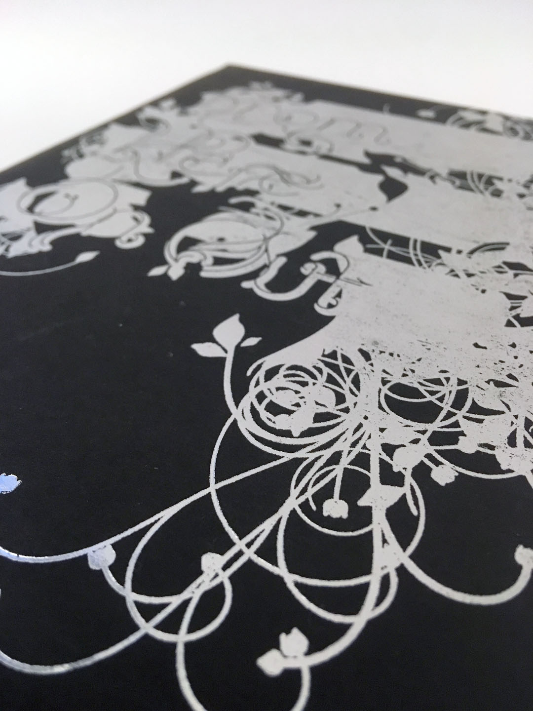
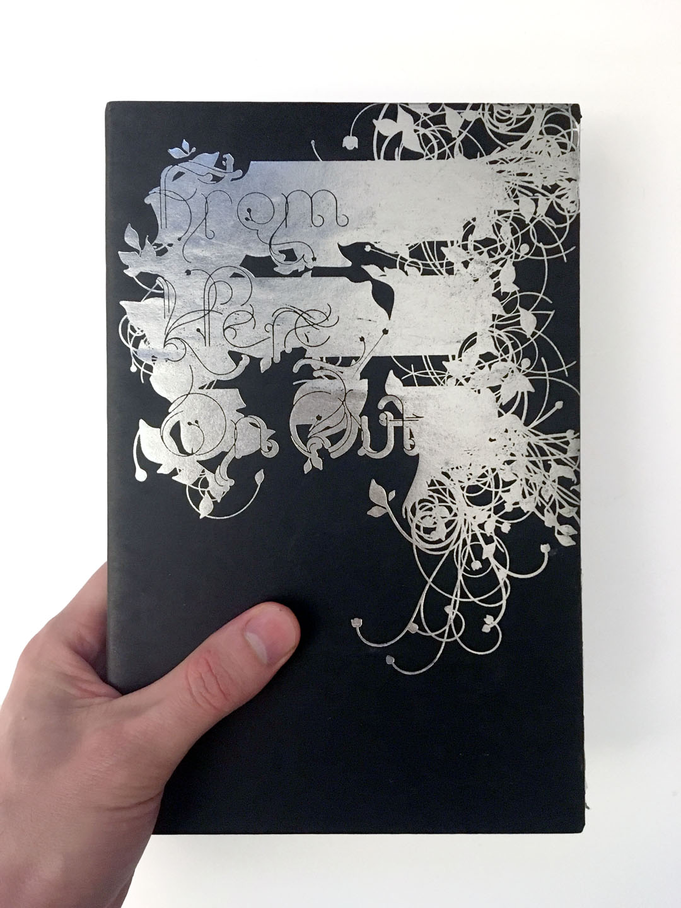
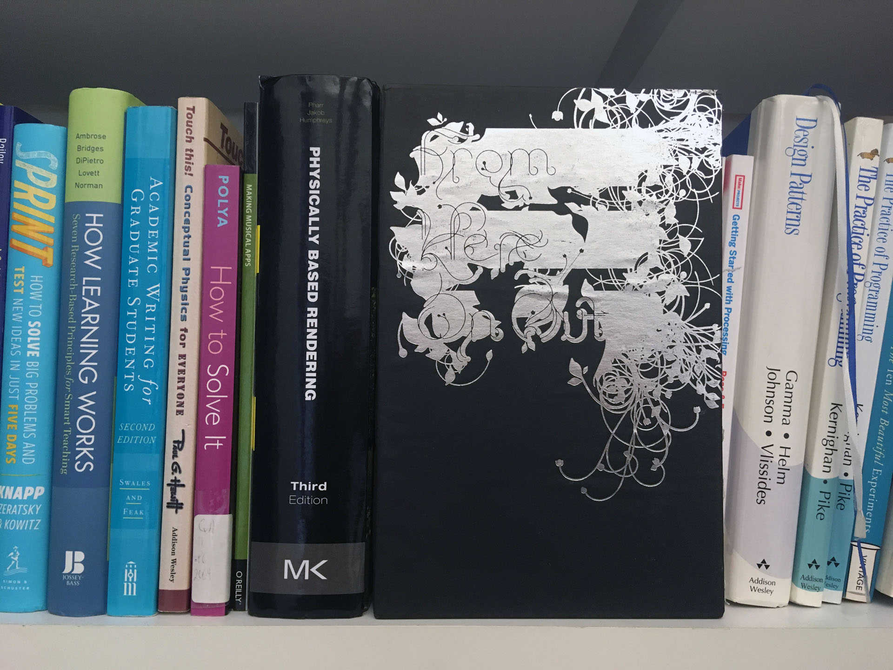
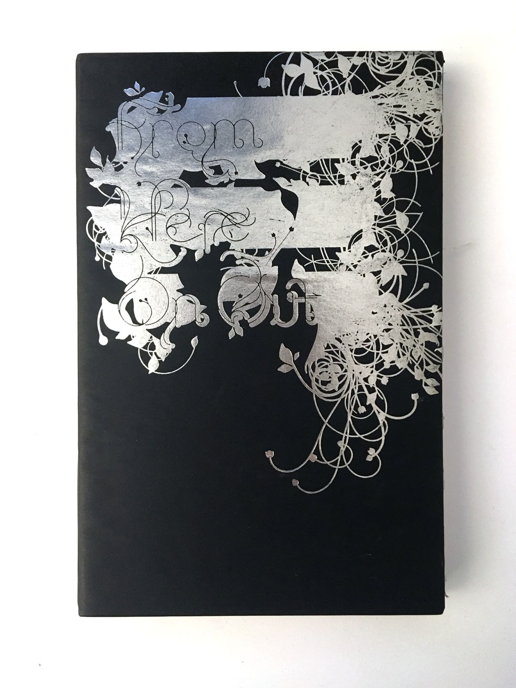
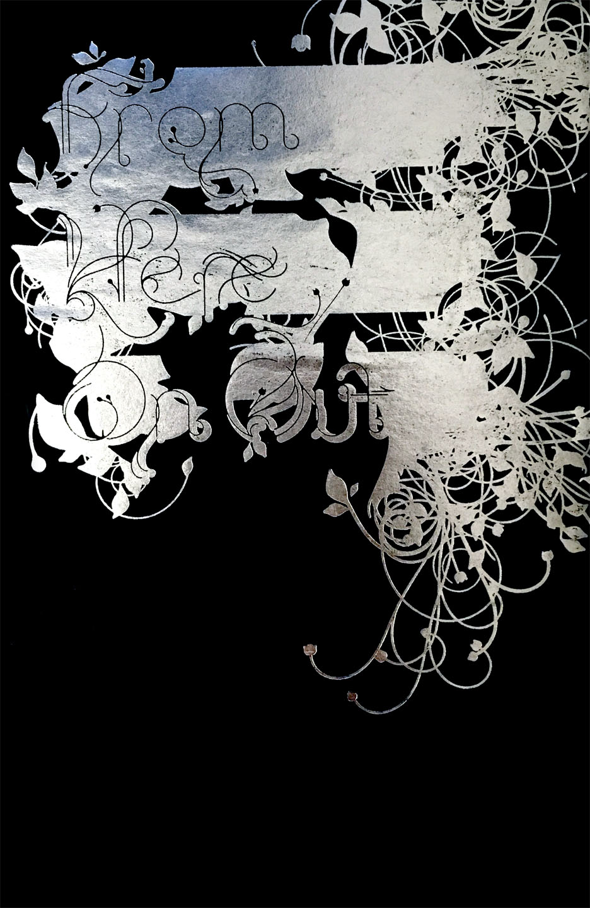

September 18
| Time | ESA | Type | Activity |
|---|---|---|---|
| 12:10 | Study | Lecture | Framing |
| 12:40 | Activate | Workshop | Documentation Photo Styling |
Design Responsibility
Every design decision has an impact on the whole. Some decisions have a minor impact and some have a major impact, but the importance of a design decision does not depend on the effort spent by the designer in making it. It is easy to spend a great deal of time on an unimportant decision. It is easy overlook something critical, trusting to convention, defaults, or the status quo.
As a designer you can’t avoid the impact of design decision by leaving it unmade.
You can’t avoid communicating.
Each design decision you make communicates.
Each design decision you don’t make communicates.
Watch out for defaults.
Framing


Documentation Photo Styling
    
Technical
| Choice | Options |
|---|---|
| Camera | Phone, Point and Shoot, DSLR, Toy, Scanner, Screengrab |
| Lighting | General Indoor, Flash, Studio Directional, Studio 3 Point, Window, Outdoor Overcast/Indirect, Outdoor Direct, Flash |
| Depth of Field | Deep, Shallow, Tilt-shift |
Styling
Your photo-styling choices matter
| Choice | Options |
|---|---|
| FoV | Tight, Middle, Wide |
| Environment | White wall, Seamless, Gallery, Pattern, Matted, Set, Workspace, Public spaces |
| People | None, Hands, Faces, Groups, Kids |
| Props | None, Multiple of Subject, In-situ/In Device, Tools, Materials |
Post-Processing
| Choice | Options |
|---|---|
| Style | Color Correct, Filter, Sharpen + Level |
| Crop | Full Frame, Crop |
| Scale | High Res, Low Res, Pixelate |
| Thumbnail | Custom, Auto, Same |
| Naming | Clear |
Workshop: Documentation Photos
Groups
- Rift
- Josefina + Alyssa + Julia + Brooke
- Sketch
- Lizette + Lillian + Dahee + Forrest
- Site
- Keaton + Ola + Herbert + Andy + Rui
Brainstorm and Plan
Groups, 20 minutes
| Style Direction | Description |
|---|---|
| High-End | Make it look like its gonna cost you. |
| Experimental | Make it look like cutting edge research fresh from the lab. |
| Work-in-Process | Make it look like a behind-the-scenes peek into your practice. |
| Friendly | Make it look affordable, approachable, fun |
| Professional | Make it looks like you got paid to do it. |
| Clean | Make it look clear, legible, and free of distraction. |
| Candid | Make it look like you didn’t out thought into it, even though you did. |
| Finished | Make it look like complete and ready to go. |
| Funny | Make it look like it doesn’t take itself too seriously. |
| Active | Make it look like it exists and is in use. |
| Forensic | Make it look like evidence in a trial. |
- Choose 4 style directions from the list above, select for variety.
- Discuss how to achieve each selected style with your artifact.
- Create a typed, clear list of design choices for each style. Email to your group and cc me.
Photograph
Individual, 1 hour
- I’ll assign you three style directions. DO NOT SHARE YOUR STYLE DIRECTION!
- Photograph of your artifact in each style.
- Scale your photo to 1920 wide, name it like this:
lastname_1.jpg. - Put it in the google folder.
- If you leave, be back BEFORE 2:10 pm.
Share + Discuss
Class, 40 minutes